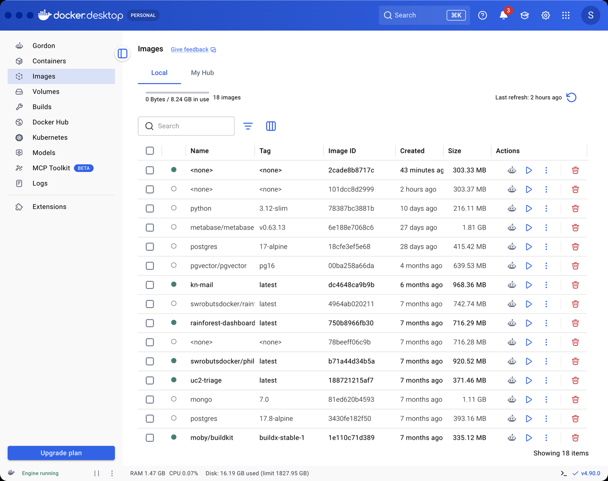
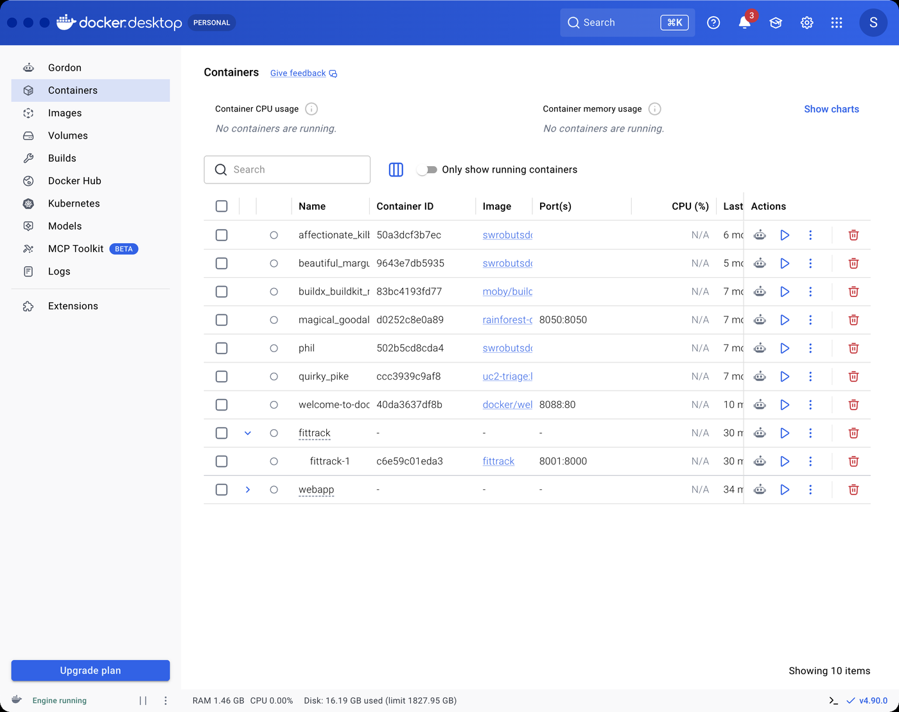
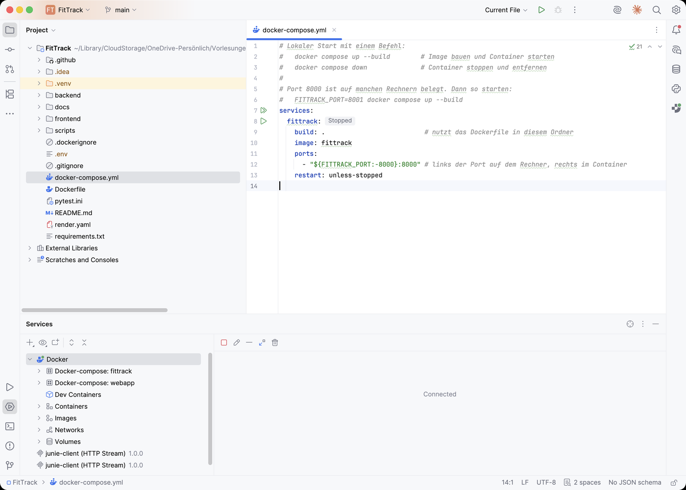

Das Problem, das es löst
Software hängt an Betriebssystem, Python-Version und Bibliotheken. Jede Abweichung erzeugt einen Fehler, den niemand nachstellen kann. Der Container paketiert die Anwendung mit ihrer gesamten Laufzeit. Aus einer Behauptung über die Umgebung wird eine überprüfbare Zusage.
Es läuft, aber nur hier. Python 3.11 statt 3.12, ein Paket fehlt, ein Pfad ist anders. Die Suche verbraucht die Zeit, die für den Sprint fehlt.
Es läuft überall gleich. App, Abhängigkeiten und Laufzeit stecken in einem standardisierten Paket. Was lokal läuft, läuft identisch bei Render.
Image und Container
| Begriff | Was es ist | Vergleich | Anzeigen mit |
|---|---|---|---|
| Image | Der Bauplan, aus dem Dockerfile gebaut, unveränderlich | Der Bauplan eines Hauses | docker images |
| Container | Eine laufende oder gestoppte Instanz eines Images | Das gebaute Haus | docker ps -a |
| Dockerfile | Die Anleitung, Schicht für Schicht | Das Rezept | im Projektordner |
Die Datenbank reist mit
COPY backend/ ./backend/ nimmt fittrack.db mit ins Image. Für eine App, die nur liest,
ist das richtig. Sobald eine App schreibt, gehört die Datenbank in ein Volume außerhalb des Containers, sonst
sind die Daten beim nächsten Neubau weg. Für FitTrack, das nur liest, ist das nicht nötig.
Das Dockerfile
Die Reihenfolge ist Technik, nicht Stil: Die Abhängigkeiten stehen vor dem Quellcode, damit ein Codewechsel nicht jedes Mal die vollständige Installation neu anstößt. Docker merkt sich jede Schicht.
# 1. Basis-Image: schlankes Linux mit Python 3.12
FROM python:3.12-slim
# 2. Arbeitsverzeichnis im Container
WORKDIR /app
# 3. Erst die Abhängigkeiten installieren. Diese Schicht wird nur neu gebaut,
# wenn sich requirements.txt ändert, was den Build deutlich beschleunigt.
COPY requirements.txt .
RUN pip install --no-cache-dir -r requirements.txt
# 4. Dann den Code kopieren (was nicht mitkommen soll, steht in .dockerignore)
COPY backend/ ./backend/
COPY frontend/ ./frontend/
# 5. Port dokumentieren und Server starten.
# ${PORT:-8000} bedeutet: nimm die Umgebungsvariable PORT, sonst 8000.
# Render.com setzt PORT selbst, lokal gilt 8000.
EXPOSE 8000
CMD ["sh", "-c", "uvicorn backend.app.main:app --host 0.0.0.0 --port ${PORT:-8000}"]
flowchart TB
L1["FROM python:3.12-slim"] --> L2["WORKDIR /app"] --> L3["COPY requirements.txt
RUN pip install"] --> L4["COPY backend/ frontend/"] --> L5["CMD uvicorn … --port ${PORT:-8000}"]
C["Codeänderung"] -. "baut nur diese Schichten neu" .-> L4
Zwei Stolpersteine
--host 0.0.0.0 muss sein, sonst ist der Container von außen stumm. Und die CMD steht als
["sh", "-c", "…"], weil nur eine Shell ${PORT:-8000} auswertet. In der Exec-Form ohne
Shell bliebe der Text wörtlich stehen.
Der Prompt
Erstelle ein Dockerfile für eine FastAPI-App mit dieser Struktur: FitTrack/ ├── backend/app/main.py (FastAPI-App, Objekt heißt app) ├── backend/app/data/fittrack.db (SQLite, wird nur gelesen) ├── frontend/ (statische Dateien, von main.py ausgeliefert) └── requirements.txt Anforderungen: - Basis python:3.12-slim, Arbeitsverzeichnis /app - requirements.txt zuerst kopieren und installieren, damit die Schicht gecacht wird; dann backend/ und frontend/ kopieren - Start: uvicorn backend.app.main:app --host 0.0.0.0 - Der Port kommt aus der Umgebungsvariable PORT, Standard 8000 (Render.com setzt PORT); EXPOSE 8000 - Dazu eine .dockerignore, die .git, .venv, __pycache__, backend/tests und docs ausschließt - Jeder Schritt mit einem kurzen deutschen Kommentar, der erklärt, warum Erkläre in drei Sätzen, warum requirements.txt vor dem Code kopiert wird.
- CMD in Shell-Form oder als
["sh", "-c", "…"]? Nur dann wird${PORT:-8000}ausgewertet. --host 0.0.0.0gesetzt? Sonst ist der Container nicht erreichbar.- Steht die Datenbank in
.dockerignore? Dann fehlt sie im Image, und/api/workoutsliefert einen Fehler. Tests und docs dürfen raus, die Datenbank nicht.
Drei Befehle
Port 8000 belegt
Bind for 0.0.0.0:8000 failed: port is already allocated heißt: Ein anderes Programm oder ein anderer
Container nutzt den Port. Ausweichen mit -p 8001:8000. Links steht der Port auf dem Rechner, rechts
der im Container.
Docker Desktop und WebStorm
Die Befehle bleiben Lernziel. Docker Desktop und WebStorm sind die Bequemlichkeit obendrauf.

fittrack mit 303 MB, daneben das Basis-Image python:3.12-slim.
fittrack-fittrack-1 aus Compose mit Port 8001 auf 8000. Start, Stop und Logs per Klick. Ein Image bauen kann Docker Desktop nicht, dafür braucht es Terminal oder WebStorm.
services: baut und startet. Unten im Fenster Services stehen Logs, Stop-Knopf und Port-Link. Voraussetzung ist eine Docker-Verbindung unter Settings → Build, Execution, Deployment → Docker.Compose und der Port
Compose fasst Bauen und Starten in einen Befehl. Für FitTrack ist es ein Dienst, und die Datei macht den Port konfigurierbar, ohne das Dockerfile anzufassen.
services:
fittrack:
build: . # nutzt das Dockerfile in diesem Ordner
image: fittrack
ports:
- "${FITTRACK_PORT:-8000}:8000" # links der Port auf dem Rechner, rechts im Container
restart: unless-stopped
stop oder down
docker compose stop hält den Container an, er bleibt in der Liste und startet per Knopf wieder.
docker compose down entfernt Container und Netzwerk. Das Image bleibt in beiden Fällen.
Spielplatz
Eine Konsole mit nachgebildetem docker. Im Ordner ~/FitTrack liegen Dockerfile und
Compose-Datei. Bekannte Abbilder: python, hello-world, nginx und das selbst
gebaute fittrack.
Übungen
Vier Übungen: dreimal an der Konsole, einmal zum Dockerfile.
Zusammenfassung
- Image ist der Bauplan, Container die laufende Instanz.
docker imagesunddocker ps -azeigen beide. - Abhängigkeiten vor dem Code kopieren, damit der Schichten-Cache greift.
--host 0.0.0.0und die Shell-Form der CMD sind die zwei Stolpersteine, die den Container stumm machen.-p 8001:8000weicht einem belegten Port aus. Links Rechner, rechts Container.- Compose macht aus Bauen und Starten einen Befehl.
stophält an,downentfernt.